{kind=link}
{kind=link}
{kind=link}
{kind=link}
{kind=link}
{kind=link}
{kind=link}
{kind=link}
{kind=link}
{kind=link}
{kind=link}
{kind=link}
IMAGEM / 150 PROMPTS
Uma nova perspectiva
para cada produto.
Crie composições de produto, retratos e cenas de lifestyle com uma base pronta para adaptar à sua identidade.
A SUA PRÓXIMA IDEIA COMEÇA AQUI
Uma plataforma com 300 prompts para imagens e vídeos. Encontre por categoria ou pela busca, copie e adapte para dar forma à sua ideia.
De criador para criador.
Por Douglas Ferreira, @dg_vfx
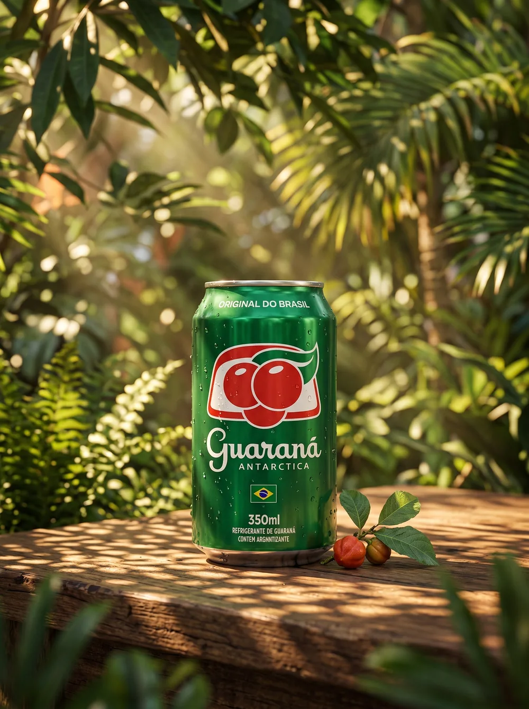
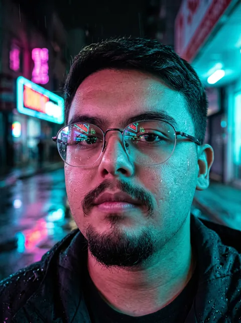
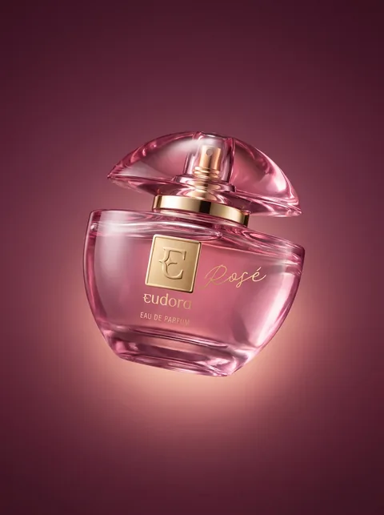
01 / DO PROMPT À PRÁTICA
Produto, retrato, campanha ou uma cena que você ainda não imaginou. Veja imagens e vídeos gerados com os prompts do CRIA.
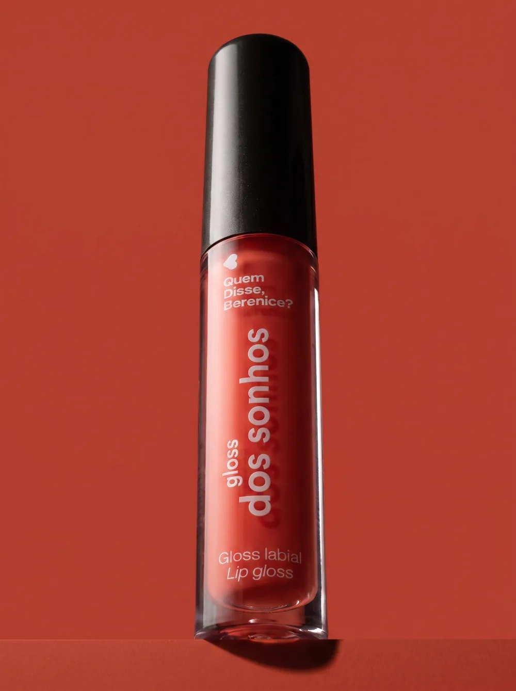
IMAGEM / PACKSHOT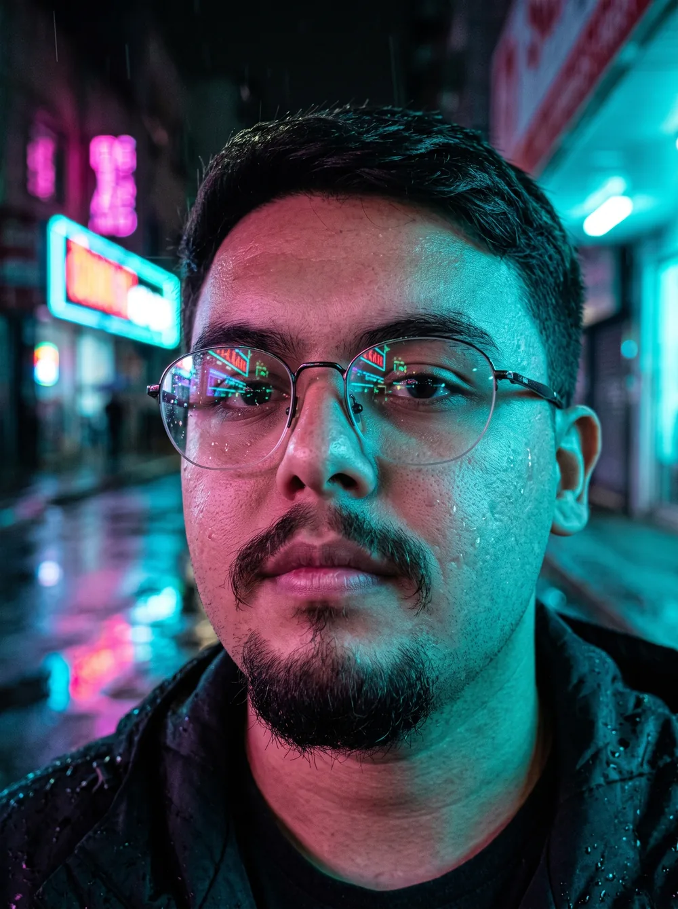
IMAGEM / SCI-FI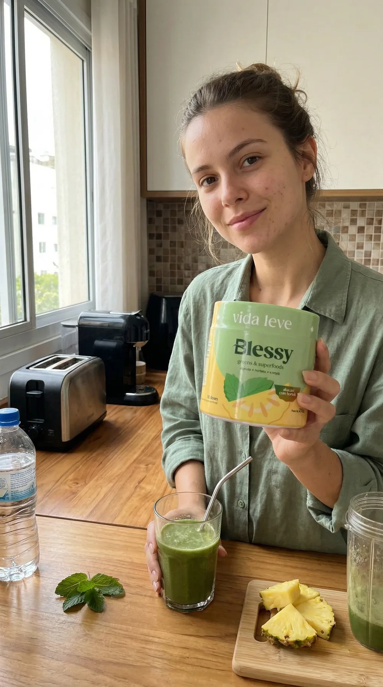
IMAGEM / UGC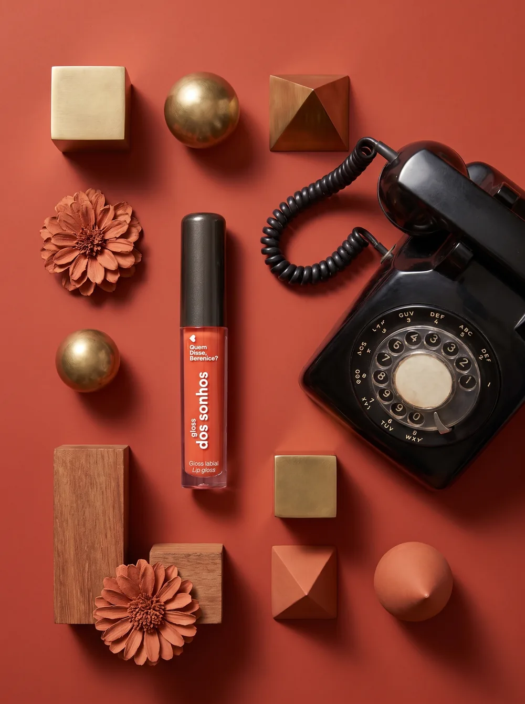
IMAGEM / PACKSHOT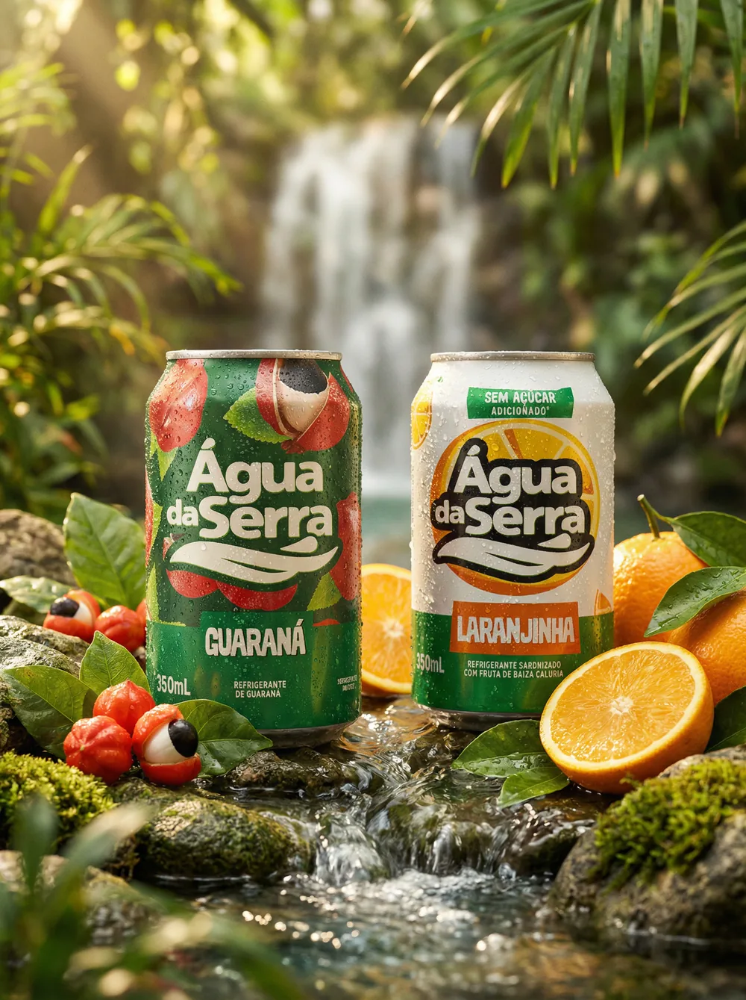
IMAGEM / PRODUTO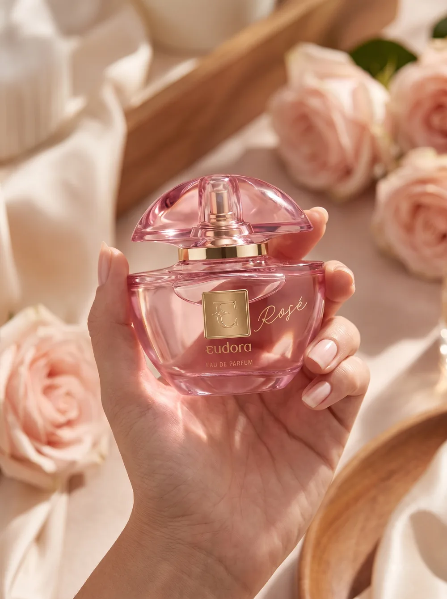
IMAGEM / UGC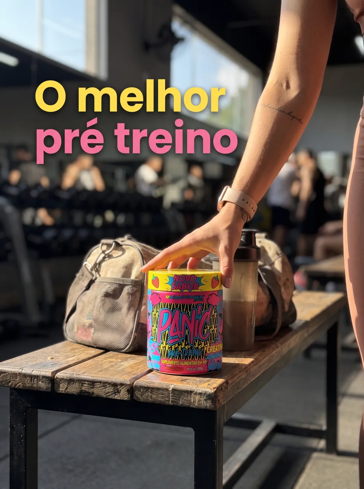
IMAGEM / FITNESSExemplos ilustrativos. Os resultados variam conforme a ferramenta, as referências e os ajustes.
02 / SEU REPERTÓRIO, AMPLIADO
Seus prompts em uma plataforma com busca, categorias e botão de copiar. Encontre a base certa, confira a ferramenta indicada e adapte à sua ideia.
Crie composições de produto, retratos e cenas de lifestyle com uma base pronta para adaptar à sua identidade.
Explore cenas cinematográficas, conteúdo UGC e efeitos visuais para ir além de uma imagem estática.
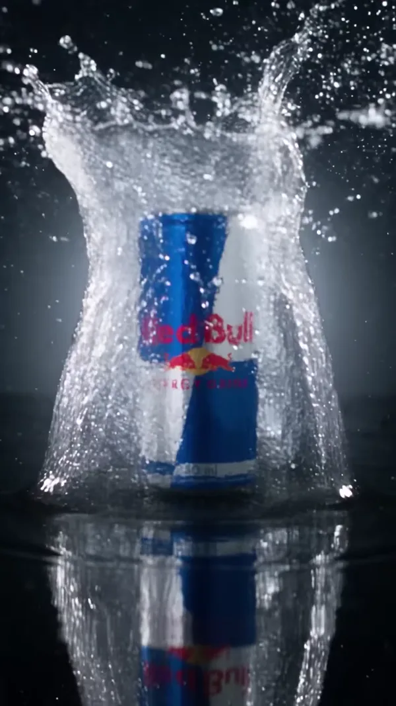
6 comandos com ChatGPT para ajudar você a adaptar os prompts ao seu contexto, produto ou pessoa.
O CRIA inclui os prompts. Acesso, planos e créditos das ferramentas de IA são separados.
03 / MENOS PÁGINA EM BRANCO
Você não precisa dominar a escrita de prompts para começar. Precisa de uma ideia e de um caminho para colocá-la em prática.
Acesse a plataforma e explore as 31 categorias ou use a busca para encontrar o prompt da sua próxima criação.
Clique em Copiar e cole o prompt na IA indicada. Adapte as instruções e use sua referência no campo @image1.
@image1+ sua referênciaVeja o resultado, ajuste o que fizer sentido e prepare o conteúdo para seus projetos, campanhas ou clientes.
Menos tempo começando do zero.
Mais espaço para a sua criatividade.
04 / FEITO PARA A SUA ROTINA
Salve a energia criativa para o que importa: a direção, os detalhes e a identidade do seu trabalho.
Parta dos prompts refinados por DG na prática, em vez de escrever cada instrução do zero.
Busca, 31 categorias e indicação de ferramenta ajudam você a encontrar o prompt certo para cada criação.
Use os prompts em projetos pessoais e profissionais, levando a mesma base a diferentes criações.
Sem mensalidade do CRIA. As atualizações futuras dos prompts estão incluídas na sua compra.
05 / PARA QUEM DÁ FORMA ÀS IDEIAS
Se você cria conteúdo visual e quer explorar a IA com mais direção, o CRIA pode fazer parte do seu processo.
Explore novos estilos para posts, vídeos e campanhas sem partir sempre da mesma ideia.
Use a biblioteca como base para experimentar composições e apresentar caminhos aos clientes.
Crie cenas, contextos e conceitos visuais que ajudam a apresentar o que você vende.
SEU PRÓXIMO PASSO
Leve o CRIA para o seu processo criativo. Acesse a plataforma para encontrar, copiar e adaptar prompts aos seus próximos projetos.
Representação visual do CRIA. Acesso à plataforma de prompts.Seu repertório de criação, em um só lugar.
à vista ou 11x de R$5,22
Parcelado: R$57,42 no total, com acréscimo.
Compra única. Sem mensalidade do CRIA.
Pagamento seguro via Kiwify
Pix ou cartão · Você conclui a compra na Kiwify.
Se não ficar satisfeito, você pode solicitar a devolução de 100% do valor dentro de 7 dias.
Assinaturas e créditos das ferramentas de IA não estão incluídos.
ANTES DE COMEÇAR
Ainda ficou alguma dúvida?
Fale diretamente com o criador.
Você recebe acesso à plataforma CRIA, com 300 prompts: 150 para imagens e 150 para vídeos, organizados em 31 categorias. Use a busca, navegue pelas categorias e copie os prompts para adaptar. A compra inclui indicação de ferramenta, guia de adaptação com 6 comandos para ChatGPT e atualizações futuras dos prompts.
Você não precisa escrever do zero: os prompts já estão prontos para copiar e adaptar. É necessário usar uma ferramenta de IA compatível, adicionar suas referências e fazer ajustes conforme o resultado. O guia de adaptação ajuda nesse processo.
O CRIA é uma plataforma para encontrar, consultar e copiar prompts. A geração de imagens e vídeos acontece nas ferramentas de IA indicadas: você cola o prompt, adiciona sua referência e ajusta o resultado.
Não. A compra inclui o acesso à plataforma de prompts e o guia de adaptação. Contas, assinaturas e créditos de ferramentas como GPT Image, Seedance, Kling e Google Flow são separados. Recursos disponíveis e custos dependem da ferramenta e do plano que você escolher.
Sim. Os prompts foram estruturados para adaptação a diferentes produtos, pessoas e contextos. O campo @image1 indica o uso de uma imagem de referência. Use o guia para ajustar as instruções à sua ideia e à ferramenta escolhida.
Sim. Você pode usar os prompts em projetos pessoais e profissionais, inclusive em trabalhos para clientes. Observe também as condições de uso da ferramenta de IA que você escolher.
A compra é concluída pela Kiwify. Após a confirmação do pagamento, você recebe acesso à plataforma CRIA para consultar e copiar os prompts. É uma compra única, sem mensalidade do CRIA. As atualizações futuras dos prompts estão incluídas.
A galeria mostra exemplos gerados com os prompts do CRIA. Cada geração pode variar de acordo com a ferramenta, a versão do modelo, a imagem de referência e os ajustes. Use os exemplos como possibilidades criativas, não como uma garantia de resultado idêntico.
Você tem 7 dias para conhecer o CRIA. Se não ficar satisfeito, pode solicitar o reembolso integral nesse prazo. Se precisar de orientação, use o contato de WhatsApp disponível nesta página.
O valor é R$47 à vista. Também há a opção de 11 parcelas de R$5,22 no cartão, totalizando R$57,42 com acréscimo. O checkout da Kiwify oferece Pix e cartão e mostra as condições antes da conclusão da compra.
AGORA, É COM VOCÊ.
E um bom ponto de partida.
Encontrar meu ponto de partida 300 prompts · Compra única · 7 dias de garantia